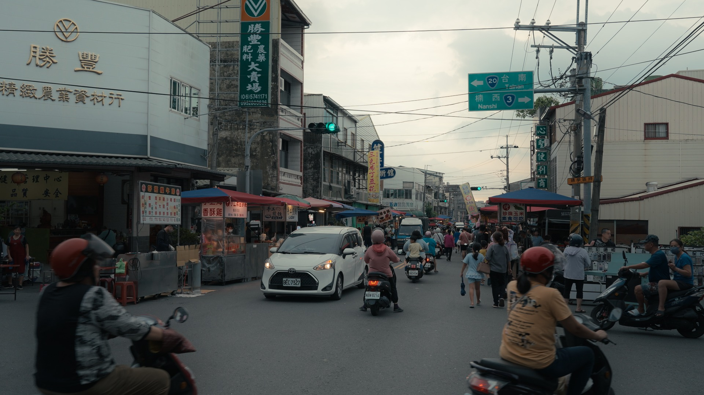
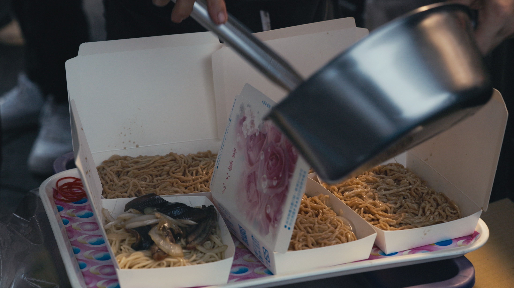
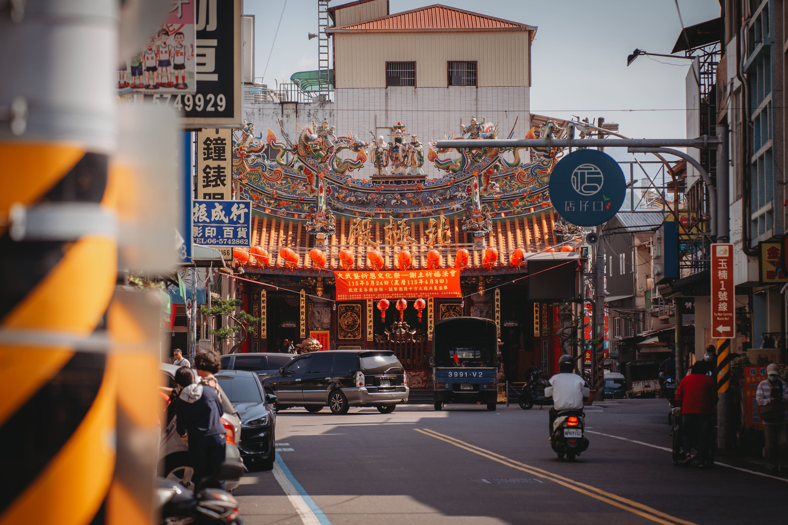
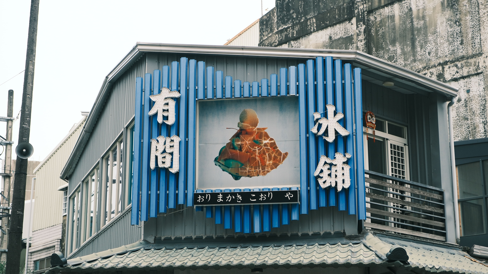
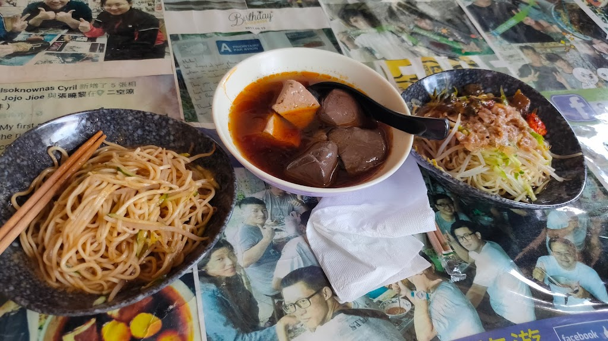
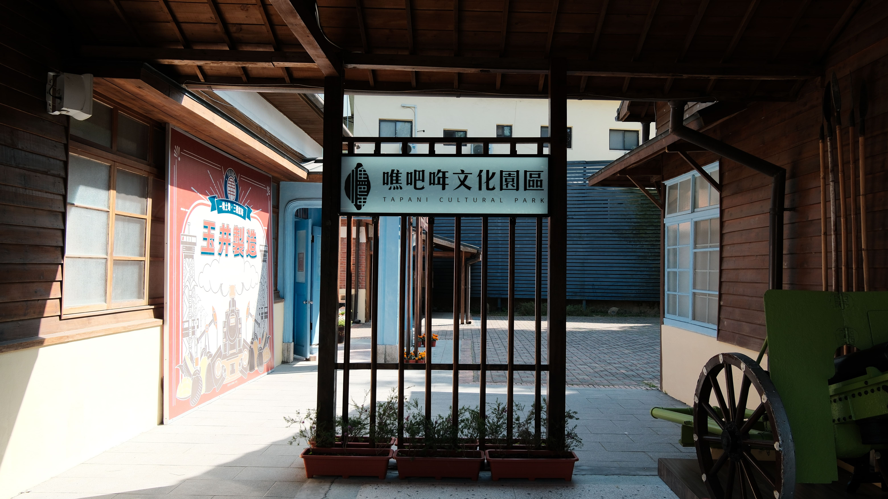
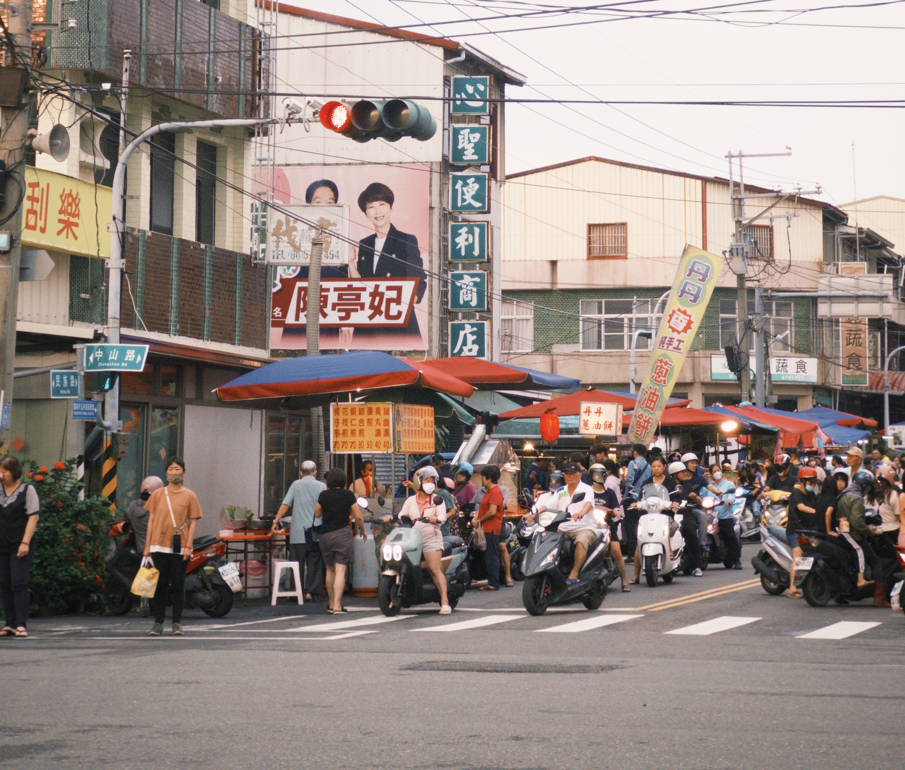

每週三和週六，這裡有著山區民眾最期待的休閒娛樂——「玉井夜市」。其中又以週三最為熱鬧，早上的玉井老街到晚上則搖身一變，夜市橫跨兩條街的範圍，總是擠滿了捧場的在地鄉親，氣氛熱鬧滿分。 其實玉井夜市的發展就是一部在地生活史。最早僅有二三十個攤位；隨著西元1980年以後的發展與遷移，最終才搬到現在的地址，也從當年的小市集變成了今日山區最重要的娛樂。



從童年果園到一生務農，記錄蔡金松在土地上慢慢扎根的人生歷程。

天未亮就下田，在風雨與收成之間，走過一輩子的果園日常。

從務農退下後，對家族、土地與下一代的深切期望與叮嚀。

從滿山柳丁到愛文芒果，見證玉井果園轉作與產業誕生的關鍵時代。

從童年苦力到機具輔助，果園日常映照出農業與時代的轉變。